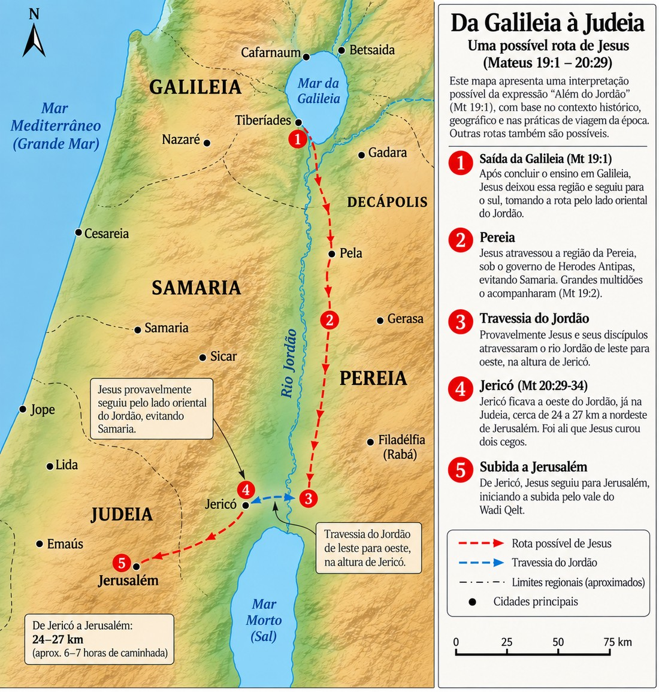

A grande ideia
Quando contemplados sob a perspectiva do Reino de Deus, o casamento, o celibato e as crianças resistem à lógica humana de posse, negociação e conquista. O que o mundo trata como contrato a ser negociado [o casamento], como uma privação a ser evitada [o celibato] ou como uma pequenez que pode ser desprezada [as crianças], o Reino revela como dádivas concedidas pela Graça de Deus.
- I. Grande ideia e contexto histórico-geográfico
- II. O debate rabínico e a virada criacional
- III. Concessão vs. instituição
- IV. O celibato voluntário como dom
- V. A acolhida das crianças
- VI. Ensaio exegético-teológico
- VII. A grande inversão do Reino
- Referências
I Grande ideia e contexto histórico-geográfico
A transição narrativa e a geografia política
Mateus 19.1–2 sinaliza uma transição literária importante. O evangelista emprega a fórmula conclusiva padrão, “E aconteceu que, concluindo Jesus estas palavras...”, para encerrar o quarto grande discurso, o Discurso Comunitário de Mateus 18, e dar início à rota final rumo a Jerusalém. A mesma fórmula fecha cada um dos cinco discursos do Evangelho: o Sermão do Monte (7.28), o Discurso Missionário (11.1), o Discurso das Parábolas (13.53), o Discurso Comunitário (19.1) e o Discurso Escatológico (26.1).
O cenário geográfico dessa transição situa-se na travessia rumo à Judeia. A expressão “além do Jordão” [Mateus 19.1] admite duas leituras: pode descrever o percurso [rota], a descida pela Pereia, na margem leste do Jordão, para evitar a Samaria; ou qualificar o próprio destino, a Judeia que fica do outro lado do rio. A gramática não decide entre elas com certeza. O percurso mais provável, que melhor explica o itinerário, passava pela Pereia, território governado por Herodes Antipas, o tetrarca que, conforme narrado em Mateus 14.3–4, mandara prender e decapitar João Batista justamente por este denunciar seu casamento ilícito e incestuoso com Herodias. Portanto, propor um debate público sobre os limites legais do divórcio justamente nesse percurso não era uma consulta teológica inocente; a pergunta reacendia a mesma questão matrimonial que custara a vida ao Batista e funcionava como uma armadilha [peirazontes, “pondo à prova”] dos fariseus. Ao formulá-la nos termos hillelitas, eles não buscam instrução; buscam obrigar Jesus a tomar partido numa controvérsia escolar e, de preferência, a fazê-lo em terreno politicamente perigoso, à sombra do destino do Batista. O mapa a seguir situa visualmente esse percurso provável.

II O debate rabínico e a virada criacional
“É lícito ao homem repudiar sua mulher por qualquer motivo?”
Mateus 19.3
A armadilha do “por qualquer motivo” [kata pasan aitian]
A expressão “por qualquer motivo” (kata pasan aitian) evocava deliberadamente a disputa hermenêutica sobre Deuteronômio 24.1 que dividia as duas grandes escolas de Jerusalém. A escola de Hillel defendia a interpretação liberal e popular, de que o marido podia se divorciar por qualquer capricho, até mesmo se a esposa deixasse a comida queimar. A escola de Shammai sustentava a leitura rígida e impopular, de que o divórcio só era legítimo em caso de falta grave ou de castidade.
“Esta condição é uma alusão à disputa que havia entre as duas escolas teológicas sobre o significado de Deuteronômio 24.1. A escola de Shammai assumia o ponto de vista rígido e não popular do divórcio só por falta de castidade, ao passo que a escola de Hillel defendia a visão liberal e popular do divórcio fácil por qualquer capricho momentâneo.”
ROBERTSON, A. T. Comentário de Mateus e Marcos, p. 216
A virada criacional e o conceito de “o que Deus uniu” [syzeugnymi]
Jesus rejeita o terreno da disputa escolarizada e eleva o debate ao padrão criacional. Em Mateus 19.4–6, funde Gênesis 1.27, a diferenciação de gêneros na criação, com Gênesis 2.24, a união conjugal, estabelecendo que a ordem da criação é o critério normativo supremo, anterior e superior a qualquer legislação de exceção posterior. Dessa fusão, extrai três princípios ontológicos indissolúveis:
- O padrão original da criação: o Criador os fez homem e mulher à Sua imagem (Gn 1.27).
- Uma só carne [mia sarx]: o casamento estabelece uma nova unidade relacional de parentesco, superior aos laços familiares de origem (deixar pai e mãe).
- A junção divina [synezēuxen]: a palavra traduzida por “ajuntou” significa literalmente “jungir”, isto é, colocar dois animais debaixo de um mesmo jugo para que puxem a carga na mesma direção. O matrimônio não é apenas um contrato horizontal humano, mas um ato vertical selado soberanamente por Deus. Como a junção é realizada pelo Criador, na voz passiva, o ser humano não possui autoridade ontológica para desfazê-la.
“Observe Sua sabedoria: quando perguntaram se era lícito, Ele não disse diretamente que era ilícito, para evitar provocá-los à disputa ou à rebelião. Em vez disso, Ele os convence de outra maneira, apontando para a criação da humanidade no princípio.”
ZIGABENOS, Monk Euthymios. Commentary on the Holy Gospel of Matthew, s/p
“De acordo com a estrutura da própria criação de Deus, se ele uniu-os, o divórcio não só é ‘antinatural’, mas também rebelião contra Deus.”
CARSON, D. A. O Comentário de Mateus, p. 481
“Deus os ‘uniu’ [synezeuxen, aparece no NT apenas aqui e no paralelo em Marcos 10:9] em uma união misteriosa, descrita como ‘uma só carne’. A unidade, conforme instituída pelo próprio Deus na criação da humanidade, não deve ser rompida por seres humanos.”
HAGNER, Donald A. Word Biblical Commentary, v. 33B, p. 548
III Concessão vs. instituição: o divórcio como “Band-Aid”
“Por causa da dureza do vosso coração é que Moisés vos permitiu repudiar vossa mulher; entretanto, não foi assim desde o princípio.”
Mateus 19.8
Pressionados, os fariseus tentam opor Jesus a Moisés: “Por que, então, mandou Moisés dar carta de divórcio?”. Jesus corrige o verbo antes de corrigir a doutrina. Eles disseram “mandou” (eneteilato, ordenou); Jesus responde “permitiu” (epetrepsen, concedeu). Deuteronômio 24 não institui o divórcio; regula, com proteção legal para a mulher repudiada, uma prática que a dureza do coração (sklerokardia) já impunha. A carta de divórcio funcionava como uma salvaguarda jurídica protetiva, um “Band-Aid” temporário: em vez de validar o divórcio, mitigava as consequências do pecado, impedindo que a mulher fosse expulsa do lar sem amparo.
“A resposta de Jesus foi que Moisés nunca mandou alguém se divorciar; Moisés só permitiu. E essa permissão só lhes foi dada por causa da dureza do coração dos seres humanos. O divórcio nunca esteve nos planos de Deus.”
RADMACHER, ALLEN e HOUSE. O Novo Comentário Bíblico: Novo Testamento, Mateus, p. 56
Sistematização dos motivos de divórcio
O versículo 9 traz a polêmica cláusula de exceção (“não sendo por causa de porneia”), registro exclusivo de Mateus. A questão de haver outros fundamentos, além do adultério e do abandono, é anterior e mais ampla do que a contribuição recente de Wayne Grudem. Antes dele, David Clyde Jones (Biblical Christian Ethics, 1994) e John Frame (The Doctrine of the Christian Life, 2008) já viam o abuso grave como violação suficiente da aliança conjugal, e David Instone-Brewer (Divorce and Remarriage in the Bible, 2002) sustentou fundamentos adicionais a partir de Êxodo 21.10–11; mais atrás, parte da tradição reformada lia a “deserção” de modo amplo, e o Reformatio Legum (século XVI) admitia o divórcio diante de tratamento violento. Em 2019, Grudem somou-se a essa corrente, propondo uma leitura de 1 Coríntios 7.15 a partir da expressão “em tais casos” (en tois toioutois), e o próprio autor reconhece esses predecessores. Trata-se, portanto, de posição em debate, não de consenso; convém ler o quadro abaixo como hipótese de trabalho, e não como doutrina fechada.
| Fundamento | Base bíblica | Núcleo |
|---|---|---|
| Infidelidade conjugal (adultério, imoralidade sexual, porneia) | Mateus 19.9 [e 5.32] | O pecado sexual viola de forma direta e grave a exclusividade da aliança de “uma só carne”. O ato de traição rompe o vínculo conjugal na prática, antes mesmo de qualquer procedimento legal. |
| Abandono pelo cônjuge incrédulo (deserção) | 1 Coríntios 7.15 | O cônjuge descrente decide, de forma voluntária, intencional e permanente, deixar o lar e abandonar a união. O cônjuge crente não está sujeito à servidão. |
| Violência e ameaças críveis de morte | 1 Coríntios 7.15 (en tois toioutois) | Agressões físicas graves ou ameaças críveis de homicídio contra o cônjuge ou os filhos atuam como uma “expulsão existencial”. O agressor torna a permanência no lar impossível e perigosa; a prioridade é a proteção física imediata da vítima. |
| Hipóteses correlatas, que alguns exemplificam como abuso infantil, dependência química, jogos de azar e pornografia incorrigível | 1 Coríntios 7.15 (en tois toioutois); Mateus 19.9 (para pornografia) | Vícios crônicos e práticas impenitentes que destroem irremediavelmente a aliança de provisão, fidelidade e paz. Em tais casos, o discernimento é necessário, assim como o processo de disciplina de Mateus 18. |
Nota de honestidade exegética
A leitura de en tois toioutois como categoria aberta é contestada: vários exegetas evangélicos sustentam que o antecedente da expressão, no fluxo de 1 Coríntios 7, remete ao caso do abandono, e não a novas causas. As hipóteses correlatas, sobretudo, vão além do que Grudem defende explicitamente. Há, porém, convergência quanto ao essencial: a igreja deve proteger com urgência o cônjuge agredido, sendo o afastamento para lugar seguro ação legítima e, muitas vezes, necessária.
“A chamada ‘cláusula de exceção’ […] Eu gostaria de argumentar, como o fazem quase todos os comentaristas conservadores, que temos de aceitar esta cláusula não só como parte genuína do Evangelho de Mateus (pois nenhum manuscrito a omite), mas também como palavra autêntica de Jesus.”
STOTT, John. Contracultura Cristã, p. 45
“Até 2019, eu mantinha a visão protestante comum e histórica sobre o divórcio, ou seja, que adultério e abandono eram os únicos dois motivos legítimos. No entanto, agora acredito que 1 Coríntios 7:15 implica que o divórcio pode ser legítimo em outras circunstâncias que prejudicam o casamento tão severamente quanto adultério ou abandono.”
GRUDEM, Wayne. Grounds for Divorce: Why I Now Believe There Are More Than Two, 2020
Da concessão mosaica ao debate contemporâneo, uma única conduta pastoral se impõe à igreja, e ela tem ordem de prioridade. A primeira palavra diante do conflito conjugal nunca é o divórcio, mas a reconciliação, porque o divórcio jamais foi mandamento, e sim permissão concedida como consequência da dureza do coração. O ideal do Reino permanece de pé: o que Deus uniu, ninguém o separe [Mateus 19.6]. Por isso a igreja trabalha, antes de tudo, para restaurar o vínculo, encorajando o arrependimento, o perdão e a cura da aliança ferida. A permissão do divórcio não é um atalho a ser oferecido, mas um último recurso diante de um mal já consumado.
Há, contudo, situações em que a aliança já não pode ser restaurada, porque, na essência, ela mesma já foi destruída, e é aí que se ergue o princípio da proteção ao vulnerável. Convém lembrar que a própria carta de divórcio, em Deuteronômio 24, nasceu com essa função: não para facilitar a separação, mas para amparar a parte mais frágil, resguardando a mulher repudiada num tempo em que o repúdio era prerrogativa do marido, e dando-lhe a prova jurídica de que estava livre para um novo casamento. A igreja herda essa mesma lógica. Diante da infidelidade que rompe o pacto, do abandono que esvazia o lar ou da violência que ameaça a vida, o cuidado pastoral volta-se prioritariamente para quem está exposto ao dano. Aqui, o afastamento para lugar seguro não é rebeldia contra a permanência, mas obediência ao Deus que resgata os oprimidos e chama os seus à paz. A preservação da vida e da dignidade jamais pode ser sacrificada em nome de uma leitura rígida da indissolubilidade. Reconciliar sempre que possível, proteger sempre que necessário: as duas mãos com que a igreja honra, a um só tempo, a santidade do vínculo e a dignidade dos feridos.
IV O celibato voluntário como dom
“Se essa é a condição do homem relativamente à sua mulher, não convém casar.”
Mateus 19.10
Impactados com a altura do padrão, os discípulos reagem com um ceticismo pragmático e quase cômico. A ética conjugal de Jesus revelou-se tão exigente que assustou até mesmo os seus íntimos.
“A doutrina de Cristo sobre o casamento não só o separava diametralmente das opiniões farisaicas de todas as nuanças de significado, mas era demasiadamente elevada até para os doze.”
ROBERTSON, A. T. Comentário de Mateus e Marcos, p. 218
Jesus não suaviza as exigências; direciona a atenção para a soberania da Graça: “nem todos podem receber esta palavra, mas somente aqueles a quem foi concedido” (Osborne). Em seguida, reinterpreta a figura socialmente desprezada do “eunuco” em três categorias: os eunucos de nascimento; os feitos pelos homens, castrados nas cortes do Antigo Oriente Próximo; e os eunucos por causa do Reino, metáfora para a renúncia voluntária ao casamento em favor de uma devoção total e indivisa. Para a sensibilidade judaica, o eunuco era banido da assembleia do Senhor (Deuteronômio 23.1); Jesus opera uma revolução espiritual, transfigurando o que a Lei via como mutilação vergonhosa em consagração livre e de alta dignidade. O texto não hierarquiza: casamento e solteirice são retratados como dons divinos (charisma) distribuídos soberanamente, não como conquistas do orgulho ascético.
“A última frase [eunucos que se fizeram tais por causa do reino] deve ser entendida no sentido daqueles que renunciaram ao casamento (como João Batista e o próprio Jesus) para dar prioridade à obra do reino, e não à exigência de continência sexual por parte daqueles que se divorciaram.”
HAGNER, Donald A. Word Biblical Commentary, v. 33B
V A acolhida das crianças e a dependência do Reino
“Deixai os pequeninos e não os embaraceis de vir a mim, porque dos tais é o reino dos céus.”
Mateus 19.14
Trazem crianças para que Jesus lhes imponha as mãos e ore, prática comum na piedade judaica para transmitir bênçãos. Os discípulos, porém, repreendem rudemente os pais, ainda presos à mentalidade antiga que via a infância como período de insignificância social. Jesus indigna-se e restaura o valor dos pequeninos. O gesto fecha o círculo aberto em Mateus 18.1–4: ali a criança fora apresentada como o padrão de conversão, o caminho para entrar no Reino; aqui é confirmada como o modelo de posse, a corporificação de quem herda o Reino.
“Eles nunca devem impedir as crianças de vir a ele, porque as crianças exemplificam o valor central do reino. Aqui, como em 18:3-5, as crianças representam os humildes a quem o reino pertence, os discípulos de Jesus.”
TURNER, David L. Matthew, Baker Exegetical Commentary on the New Testament, p. 464
Ao declarar que o Reino pertence aos que são como as crianças, Jesus não faz apologia sentimentalista da inocência infantil. O ponto é a postura existencial: a criança aproxima-se de mãos completamente vazias, sem poder social, realizações ou méritos para oferecer como moeda de troca. Ela exemplifica a total dependência, a confiança receptiva e a ausência de barganha. Para herdar as riquezas de Deus, o adulto precisa ser curado do cinismo e do orgulho, despindo-se dos méritos acumulados para receber o Reino como presente da Graça.
“Jesus quer que os seus discípulos recuperem e retenham as qualidades infantis compatíveis com a maturidade. O reino de Deus, deixa Ele implícito, pertence aos que confiam, são receptivos e amigáveis, e que permanecem incólumes face às dificuldades e desilusões, ao cinismo e pessimismo...”
TASKER, R. V. G. Evangelho de Mateus: Introdução e Comentário, p. 147
VI Ensaio exegético-teológico: o resgate do design criacional
Ao ser confrontado pela casuística farisaica, Jesus recusa limitar o matrimônio ao debate jurídico de Deuteronômio 24 e promove um recuo hermenêutico intencional ao princípio da criação (Gênesis 1.27; 2.24), resgatando a dignidade original do casamento como aliança ontológica e indissolúvel de “uma só carne”. A dureza de coração (sklerokardia) surge como força ativa de corrupção que se contrapõe a esse princípio, introduzindo na esfera doméstica uma lógica egoísta de posse, descarte e controle.
Sob perspectiva refinada, é fundamental reconhecer que a sklerokardia destrói a essência da aliança muito antes de o divórcio ser formalizado. A infidelidade, o abandono voluntário ou a violência extrema constituem o verdadeiro assassinato do vínculo; o processo de divórcio não é o agente destruidor, mas o diagnóstico doloroso e o registro público de um pacto já estraçalhado. A carta de divórcio atua como um “Band-Aid” jurídico, regulando o estrago e amparando o cônjuge vulnerável, sem nunca atenuar a gravidade da fratura que a precedeu.
Essa tensão encontra sua resolução na Nova Aliança. Enquanto a antiga economia lidava com o coração de pedra por meio de tolerâncias provisórias, a era do Evangelho capacita a Igreja com um coração de carne, moldado pela habitação do Espírito Santo, restaurando a viabilidade prática do ideal criacional. O mesmo coração regenerado que preserva o casamento é o que abraça a solteirice dedicada por amor ao Evangelho e o que se aproxima de Deus como uma criança, de mãos vazias, recebendo a Graça como dádiva inegociável do Reino.
VII A grande inversão do Reino
Os três episódios de Mateus 19.1–15, embora pareçam tematicamente distantes, convergem para a mesma tese. O casamento, a instituição: o que parece uma restrição severa é, na verdade, Graça protetora que resguarda a aliança contra a violência da dureza do coração. O celibato, a renúncia: o que parece privação é, na verdade, liberdade concedida por Deus para servir ao Reino com dedicação total. A criança, a pequenez: o que parece irrelevância aos olhos do mundo é, na verdade, a única forma de fé que salva e herda a glória eterna.
Nenhum desses regimes pode ser conquistado, fabricado ou negociado pelo esforço humano; todos são recebidos diretamente do trono da Graça. Se nos aproximamos do Rei com as mãos cheias de justiça própria ou orgulho ascético, sairemos de mãos vazias. É somente quando nos fazemos pequenos, estendendo mãos vazias e dependentes como uma criança, que o próprio Deus nos preenche com a totalidade das riquezas do Seu Reino.
Para meditar e orar
Oração
Senhor da criação e do Reino, tu que colocas os cônjuges debaixo de um mesmo jugo e ajuntas o que nenhum homem tem o direito de separar, cura a dureza do meu coração. Dá-me Graça para receber a vocação que me confiares, seja o casamento fiel, seja a solteirice consagrada, como dom, e não como fardo nem troféu. Faze de mim outra vez criança diante de ti: sem méritos a exibir, apenas mãos vazias e estendidas. Em nome de Jesus. Amém.
Pergunta para meditação
Onde, na minha vida, eu ainda tento entrar no Reino de mãos cheias, quando ele só se recebe de mãos vazias?
Referências
ROBERTSON, A. T. Comentário de Mateus e Marcos. Editora Vida Nova.
CARSON, D. A. O Comentário de Mateus [Expositor's Bible Commentary]. Editora Vida Nova.
HAGNER, Donald A. Word Biblical Commentary, v. 33B: Matthew 14–28.
TASKER, R. V. G. Evangelho de Mateus: Introdução e Comentário. Editora Vida Nova.
TURNER, David L. Matthew [Baker Exegetical Commentary on the New Testament].
STOTT, John. Contracultura Cristã. Editora Vida Nova.
ZIGABENOS, Monk Euthymios. Commentary on the Holy Gospel of Matthew.
OSBORNE, Grant R. Exegetical Commentary: Matthew.
RADMACHER, ALLEN e HOUSE. O Novo Comentário Bíblico: Novo Testamento.
NEWHEISER, Jim. Casamento, Divórcio e Novo Casamento: Perguntas e respostas fundamentais.